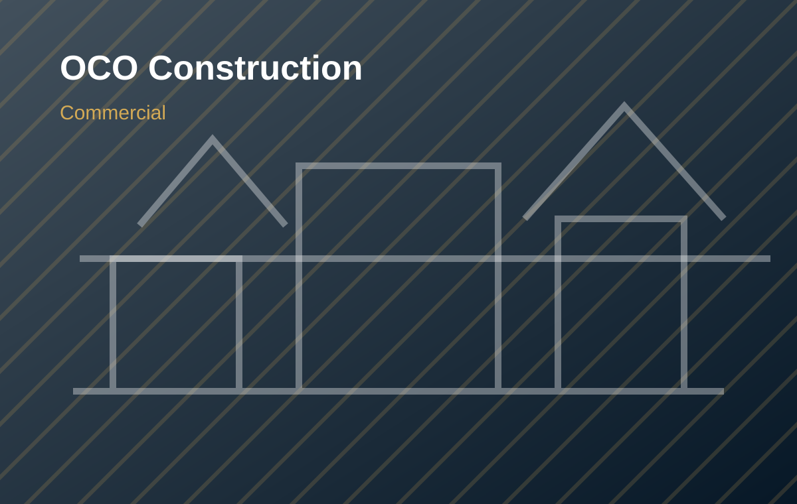

🏢
Commercial
Ground-up buildings, tenant improvements, offices, retail spaces, and closeout coordination.
OCO Construction delivers residential, commercial, industrial, and civil construction services with disciplined project execution, durable workmanship, and direct owner-level accountability.
Scale from custom residential builds to larger site, road, commercial, and industrial projects.
Ground-up buildings, tenant improvements, offices, retail spaces, and closeout coordination.
Durable facilities, service buildings, equipment pads, utility support work, and operational spaces.
Roadwork, site preparation, drainage coordination, flatwork, access routes, and civil support.
Custom homes, additions, remodels, and long-term residential value with clean finishes.
OCO Construction is positioned as a broad-scope builder for the Rio Grande Valley: practical for homeowners, professional for commercial owners, and capable for infrastructure work.

Completed, in-progress, and future work is organized as a living portfolio with dedicated asset folders for each project.
Contact OCO Construction for residential, commercial, industrial, or infrastructure project inquiries.